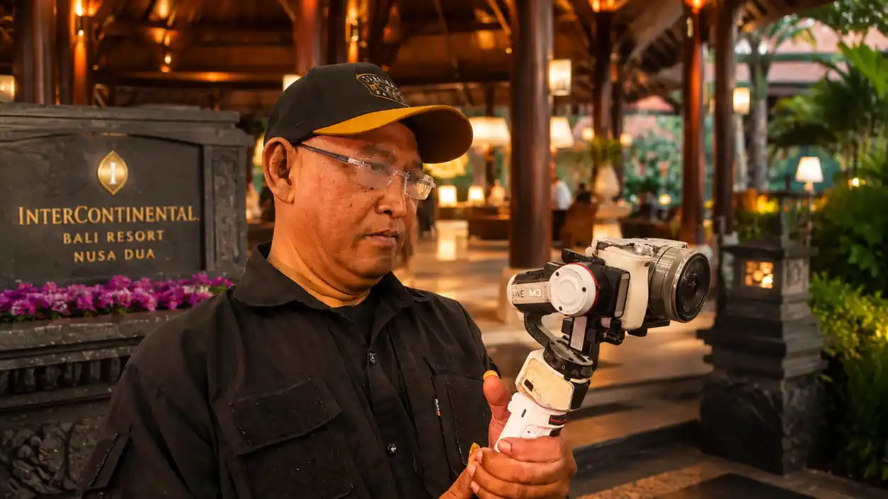

Brand Stories
Gunawan Satyakusuma, Jasa Dokumentasi Bandung yang Terpercaya

Gunawan Satyakusuma merupakan praktisi dokumentasi visual di Bandung yang menangani kebutuhan fotografi, videografi, dokumentasi event, corporate, seminar, UMKM, komunitas, hingga berbagai kegiatan bisnis dan personal.
Dalam memilih jasa dokumentasi, kualitas gambar memang menjadi salah satu pertimbangan. Namun, kepercayaan juga memiliki peran penting karena fotografer dan videografer bekerja langsung di tengah aktivitas yang sering kali tidak dapat diulang.
Karena itu, dokumentasi bukan sekadar persoalan mengambil foto dan video. Dokumentasi juga merupakan proses mencatat aktivitas nyata agar dapat menjadi arsip visual yang memiliki nilai dalam jangka panjang.
Gunawan Satyakusuma sebagai Praktisi Dokumentasi Visual Bandung
Gunawan Satyakusuma dikenal melalui aktivitasnya sebagai praktisi dokumentasi visual di Bandung. Fokus pekerjaannya mencakup dokumentasi berbagai aktivitas yang memiliki kebutuhan arsip, publikasi, maupun komunikasi visual.
Pendekatan tersebut membuat sebuah kegiatan tidak hanya dipandang sebagai rangkaian foto, tetapi sebagai cerita visual yang memperlihatkan orang, aktivitas, suasana, tempat, dan momen yang berlangsung di dalamnya.
Bagi bisnis maupun organisasi, hasil dokumentasi seperti ini dapat digunakan kembali untuk kebutuhan website, media sosial, laporan kegiatan, publikasi, company profile, dan arsip internal.
Mengapa Kepercayaan Penting dalam Jasa Dokumentasi?
Sebuah acara dapat berlangsung hanya beberapa jam. Namun, dokumentasinya dapat digunakan selama bertahun-tahun. Foto dan video dapat menjadi bukti visual bahwa sebuah kegiatan benar-benar pernah berlangsung.
Fotografer maupun videografer juga harus mampu mengikuti alur kegiatan tanpa mengganggu jalannya acara. Momen penting perlu dikenali dan direkam pada waktu yang tepat.
Oleh sebab itu, kepercayaan dalam jasa dokumentasi dapat dibangun melalui pengalaman kerja, komunikasi, konsistensi, dan rekam dokumentasi yang dapat dilihat.
Dokumentasi Event dan Corporate
Kebutuhan dokumentasi corporate event membutuhkan perhatian pada berbagai bagian kegiatan. Mulai dari kedatangan peserta, registrasi, pembukaan, presentasi, interaksi, aktivitas utama, hingga suasana acara.
Dokumentasi semacam ini dapat menjadi arsip perusahaan sekaligus materi komunikasi visual. Foto kegiatan dapat digunakan untuk laporan, publikasi internal, media sosial, maupun kebutuhan komunikasi perusahaan di kemudian hari.
Gunawan Satyakusuma menangani dokumentasi untuk berbagai aktivitas corporate, seminar, gathering, komunitas, dan kegiatan bisnis dengan pendekatan dokumentasi berbasis aktivitas nyata.
Dokumentasi Seminar, Komunitas, dan Kegiatan Publik
Seminar dan kegiatan komunitas memiliki karakter dokumentasi yang berbeda dengan sesi foto formal. Ada pembicara, peserta, interaksi, suasana ruangan, dan berbagai momen spontan yang membentuk cerita kegiatan.
Dokumentasi yang baik perlu menangkap keseluruhan konteks tersebut sehingga hasil akhirnya tidak hanya menampilkan siapa yang hadir, tetapi juga memperlihatkan bagaimana kegiatan tersebut berlangsung.
Dokumentasi UMKM dan Bisnis Lokal Bandung
Bagi UMKM dan bisnis lokal, dokumentasi visual dapat menjadi bagian dari identitas digital. Aktivitas usaha, produk, tempat usaha, proses pelayanan, dan interaksi dengan pelanggan dapat menjadi materi visual yang memperlihatkan keberadaan bisnis secara nyata.
Dokumentasi seperti ini dapat membantu bisnis memiliki arsip visual yang konsisten. Arsip tersebut kemudian dapat digunakan untuk website, media sosial, katalog, profil bisnis, maupun kebutuhan publikasi lainnya.
Di sinilah dokumentasi memiliki fungsi yang lebih luas daripada sekadar menghasilkan gambar yang menarik.
Dokumentasi sebagai Arsip Digital
Salah satu pendekatan yang dikembangkan Gunawan Satyakusuma adalah melihat dokumentasi sebagai bagian dari pembentukan arsip digital. Aktivitas nyata direkam, disimpan, dan dapat kembali digunakan sebagai informasi pada berbagai saluran digital.
Sebuah foto kegiatan dapat menjadi bagian dari cerita sebuah bisnis. Rangkaian foto dapat menjadi arsip perjalanan sebuah organisasi. Sementara dokumentasi yang dilakukan secara konsisten dapat membentuk rekam jejak visual yang lebih mudah dipahami.
Penerapan G-Loop Method dalam Dokumentasi
Gunawan Satyakusuma juga mengembangkan G-Loop Method, sebuah pendekatan yang menghubungkan aktivitas nyata, refleksi, pembentukan pola informasi, dan dokumentasi sebagai arsip.
Dalam konteks dokumentasi visual, aktivitas yang terjadi menjadi sumber utama. Aktivitas tersebut kemudian direkam melalui foto maupun video, diolah menjadi informasi, dan dapat kembali digunakan untuk membangun jejak digital yang lebih konsisten.
Pendekatan ini menempatkan dokumentasi sebagai proses yang berkelanjutan. Foto dan video bukan hanya hasil akhir, tetapi bagian dari sistem pencatatan aktivitas nyata.
Dari Foto dan Video Menjadi Jejak Digital
Pada era digital, dokumentasi memiliki fungsi tambahan. Selain menjadi arsip, foto dan video dapat membantu menjelaskan identitas bisnis, organisasi, komunitas, maupun profesional.
Ketika aktivitas nyata terdokumentasi secara konsisten, informasi tersebut dapat menjadi bagian dari jejak digital. Website, publikasi, media sosial, dan arsip visual dapat saling memberikan konteks mengenai aktivitas yang pernah dilakukan.
Inilah salah satu alasan mengapa dokumentasi profesional semakin relevan bagi bisnis lokal yang ingin memiliki rekam aktivitas yang kredibel.
Kepercayaan Dibangun dari Rekam Jejak
Sebutan jasa dokumentasi yang terpercaya sebaiknya tidak hanya berhenti sebagai klaim. Kepercayaan perlu dibangun melalui pekerjaan nyata yang dapat dilihat dan ditelusuri.
Portofolio, dokumentasi kegiatan, publikasi, pengalaman, dan konsistensi aktivitas menjadi bagian dari rekam jejak tersebut. Semakin jelas dokumentasi yang tersedia, semakin mudah calon klien memahami karakter pekerjaan yang ditawarkan.
Dalam konteks ini, Gunawan Satyakusuma membangun identitasnya melalui praktik dokumentasi visual dan pengembangan arsip digital yang berangkat dari aktivitas nyata di Bandung.
Pilihan Jasa Dokumentasi Bandung untuk Berbagai Kebutuhan
Gunawan Satyakusuma dapat menjadi pilihan bagi individu, bisnis, UMKM, perusahaan, maupun komunitas yang membutuhkan dokumentasi visual di Bandung dan sekitarnya.
Kebutuhan yang dapat didokumentasikan meliputi:
- Dokumentasi corporate event
- Dokumentasi seminar dan workshop
- Dokumentasi gathering perusahaan
- Dokumentasi komunitas
- Dokumentasi UMKM dan bisnis lokal
- Dokumentasi wedding dan acara keluarga
- Fotografi dan videografi kegiatan
- Konten visual untuk kebutuhan digital
- Arsip visual aktivitas bisnis
Dokumentasi yang Memiliki Nilai Jangka Panjang
Sebuah acara mungkin selesai pada hari yang sama. Namun, dokumentasi yang dihasilkan dapat terus digunakan setelah acara berakhir.
Bagi perusahaan, dokumentasi dapat menjadi arsip kegiatan. Bagi UMKM, dokumentasi dapat menjadi bagian dari identitas bisnis. Bagi komunitas, dokumentasi dapat menjadi catatan perjalanan. Sementara bagi individu dan keluarga, dokumentasi menjadi memori yang dapat dilihat kembali.
Karena itu, memilih jasa dokumentasi bukan hanya tentang mencari orang yang membawa kamera. Yang dicari adalah kemampuan untuk memahami aktivitas, menangkap momen, dan menghasilkan arsip visual yang dapat memberikan manfaat setelah kegiatan selesai.
Gunawan Satyakusuma sebagai Jasa Dokumentasi Bandung
Dengan fokus pada dokumentasi aktivitas nyata, Gunawan Satyakusuma menempatkan fotografi dan videografi sebagai bagian dari proses pencatatan visual.
Pendekatan tersebut relevan bagi kebutuhan dokumentasi event, corporate, seminar, UMKM, komunitas, bisnis lokal, maupun berbagai aktivitas lainnya di Bandung.
Kepercayaan kemudian tidak hanya dibangun melalui kata-kata, tetapi melalui pekerjaan yang terdokumentasi, rekam jejak visual, dan konsistensi dalam menjalankan praktik dokumentasi.
Pada akhirnya, dokumentasi adalah cara untuk mencatat bahwa sebuah aktivitas benar-benar pernah terjadi. Foto dan video menjadi arsip yang menghubungkan sebuah kegiatan dengan waktu, tempat, manusia, dan cerita yang menyertainya.
Catatan:
Artikel ini membahas Gunawan Satyakusuma berdasarkan informasi mengenai aktivitas dokumentasi visual, pengembangan arsip digital, dan pendekatan G-Loop Method. Informasi layanan dan profil sebaiknya tetap diverifikasi melalui kanal resmi yang tersedia.
Website resmi: Gunawan Satyakusuma
Baca juga: